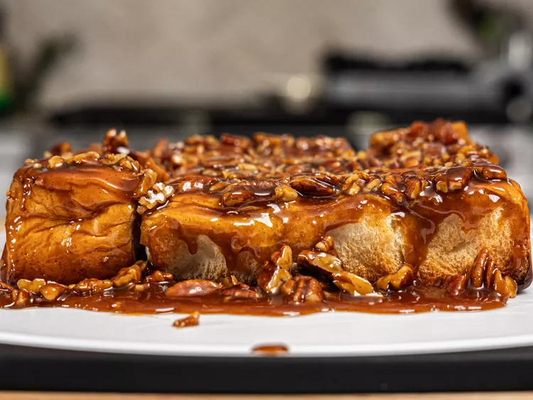

Pecan Sticky Buns

Description
A delicious 30 minute breakfast that consist of Hawaiian rolls, pecans, and a homemade sticky sauce
Ingredience
- 1/2 cup of unsalted butter
- 1/2 cup of brown sugar
- 1 cup of chopped pecans
- 2 1/2 tablesspoons of honey
- 1 pinch of salt
- 1 teaspoon of vanilla bean paste
- 2 tablespoons of heavy whipping cream
- 1 (12-count) package of Hawaiian rolls
Steps
- Preheat oven to 350 F. Line an 8x8 cake pan with parchment paper
- Combine butter, sugar, salt, and honey in a pan set over medium heat. Stir while cooking until the sugar dissolves and mixture starts to bubble a little bit, 3 to 5 minutes.
- Turn off heat and add vanilla bean paste, heavy cream, and chopped pecans. Mix until the pecans are fully coated and set aside to cool slightly.
- Pour all of the sauce in the pan into the prepared cake pan and spread it out into an even layer. Add Hawaiian rolls, top side down.
- Bake in the preheated oven until the sauce is very bubbly and the buns are slightly brown, 15-20 minutes.
- Let it cool for up to 5 minutes before flipping onto a cutting board or plate
- Enjoy!
Home